Venmo Redesign
UX design; Product thinking · Spring 2019
Overview
Redesigning Venmo to be more efficient in terms of transactions, as well as conceptualzing a potential recurring payments feature and exploring how it fits within Venmo's current ecosystem. .
Note: I am not affilliated with Venmo
Role
Solo designer and researcher
Project Timeline
2 weeks
Team
Chaitanya Prashant - Designer and researcher
Responsibilities
Design research, interaction design, product thinking.
Introduction
Venmo is ubiquitous around the country for young adults, and for good reason. There has been no other payments solution that has streamlined payment since PayPal was launched.
In my day-to-day, I use Venmo for splitting up subscription based payments, club reimbursements, and general food requisitions when splitting any bills.
However, no app, Venmo included, is perfect. Even though the app has undergone significant changes, I asked the question
How can they achieve their goal of mitigating awkwardness in transactions, and making it even more efficient and useful?
Who are the users?
Venmo’s user base consists across a vast spectrum, consisting of around 27 and a half million users. A large percentage of this user base is the millennial demographic, which is part of the reason why from a product standpoint, Venmo aimed to make transactions more social. I came up with two personas to fit the different demographics that are most represented in the product, and will be telling the story of my redesign through the lens of these two users.
Janice

20 year old college student
Splits apartment utilities and Netflix subscriptions with friends
Has an unforgiving work and school schedule
Kartik

22 year old professional
Splits rent with 4 people, and tries to stay on track through WhatsApp or other messaging services.
Can be forgetful at times, especially with transactions and payments
What's the problem?
Whenever I start off with a redesign, I aim to look at pressing, people problems to solve, rather than add something cosmetic that doesn’t provide tangible value.
Therefore, the first thing I did while auditing Venmo was ask peers around me, all who have used the app in some capacity, their thoughts on the app. This is to ensure that I’m not stuck in my own bubble of perspectives, but am considering other people’s needs and pain points.
I conducted informal interviews with 6 people, and some of the questions I asked included,
- How often do you use Venmo?
- What are some things/payments that you use Venmo for?
- Any important payments such as rent or recurring payments?
- Is the app successful in doing its job of paying and receiving money?
- How do you go about paying or requesting money?
- Have you ever mistakenly paid someone instead of requesting, and vice versa?
- Do you struggle with any of the app’s features or the way it works? What would you change about it?
After analyzing interview notes, as well as observing their use cases for Venmo, I focused on two potential design opportunities and user pain points.
Ambiguity between paying and requesting
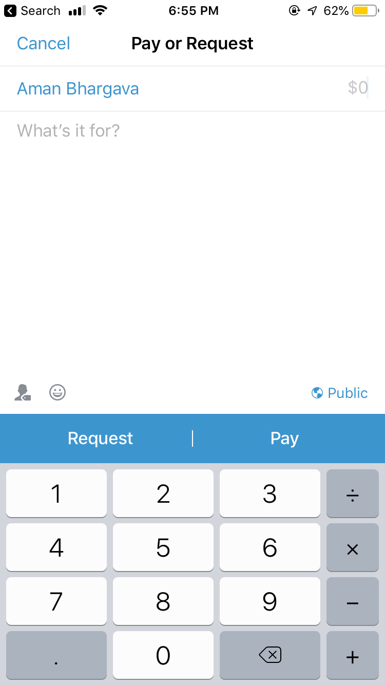Current transaction experience
From the interviews, 3 out of 6 users had been confused when it comes to paying vs requesting someone on Venmo.
The similarly grouped CTA’s (pay / request) led people to accidentally pay money instead of requesting a certain amount. This can possibly lead to tension and awkwardness between the two parties, which is something that Venmo is trying to mitigate with its product.
The potential for recurring payments
One core problem that kept coming up in my interviews was the nature of recurring payments
5 out of the 6 users I interviewed used Venmo for recurring payments, which included
- Netflix / Spotify / Apple Music subscriptions
- House utilities
- Rent payments (in the case of townhouses and homes)
A core demographic of Venmo users, millennials and college students, face a very specific problem.
A number of college students and millennials have to pay rent, usually as part of a group of roommates. However, the current workflow, especially for a topic as sensitive as rent, has a lot of friction.
General workflow
In a group of 4, its usually one person writing a cheque to the landlord, as a way of getting money without any transaction fee. What usually happens is the one person has to remind their roommates or shared payers to pay at an internal date via a messaging app (potential point of friction) → then they Venmo the person X amount of money → payer waits for bank transfer → person writes cheque to landlord
This can be extended to events outside of rent, to recurring payments like utilities and service subscriptions.
Problems can occur here, with some of them being
- A shared payer forgetting to pay for a particular paying cycle
- Accounting for all payers, people currently have problems with this due to the constant back and forth nature of reminding people on messenger, which can lead to awkwardness in transactions.
In fact, 4 of the 5 people who used Venmo for recurring payments remember a time when they forgot to pay at a specified date.
What if Venmo, with its focus on millennials and product vision to make transactions more social and efficient, introduced a feature to keep track of recurring split payments?
Design Goals
Before getting anywhere near pencil and paper, I set myself a few goals and constraints with the redesign efforts, to make sure that my designs are grounded in rationale, as well as with Venmo’s business goals in mind.
Design for familiarity
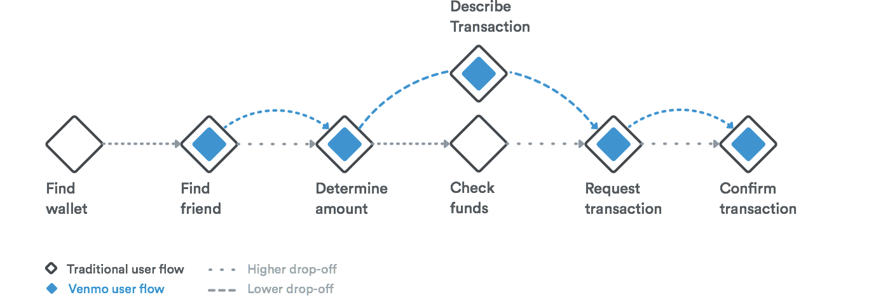Venmo's transactional flow mapped to the way humans pay
Venmo’s current interface works well because of how well it maps humans mental models of payment digitally. Therefore, I wanted to make sure that my solution would not represent a massive change to their mental models, but instead make transactions a more seamless interaction.
Foster focus and minimize ambiguity
Design for focus, since payments are sensitive and we need to eliminate ambiguity for users to make sure that they are paying or requesting for what’s needed, thus strengthening the trust of users in Venmo.
Emphasize user control and context
The user should still feel in charge of all transactions, which increases trust and control in the product. User should be able to easily view contextual information so that they can complete their transaction accurately and efficiently.
Don’t stray from existing visual patterns
Venmo’s design as it stands today has gone through many iterations, backed with data and design rationale, which is why I set myself the constraint of not straying from existing design patterns within the Venmo paradigm. This way, my design solution could enrich the experience for new and old users alike, while respecting Venmo’s established principles that have influenced its design decisions.
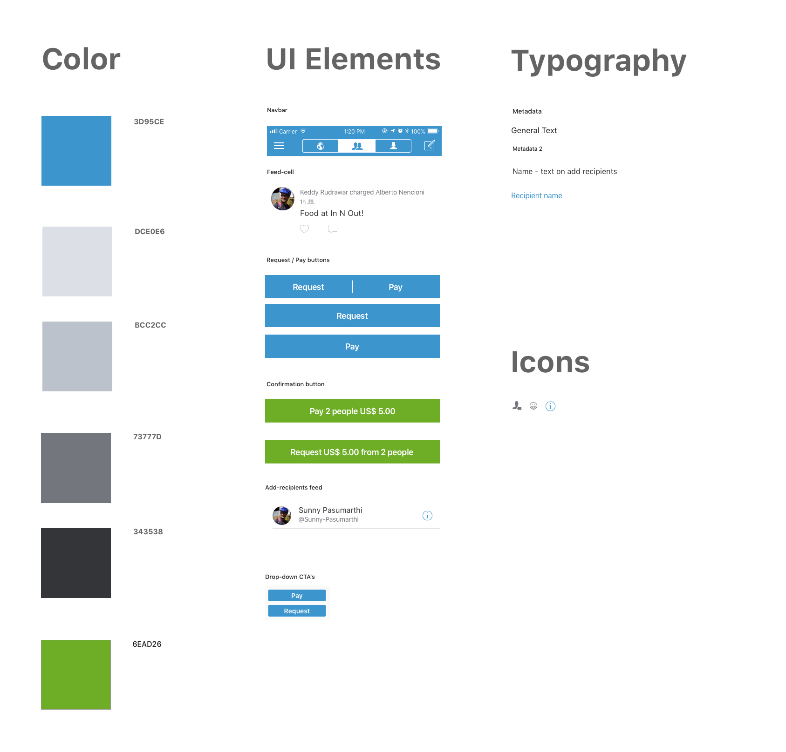Concise visual styleguide
I audited Venmo’s visual design, and created a concise style guide of the atomic elements so that my redesign would be consistent with the current visual design paradigm and patterns used in Venmo.
Solving for ambiguity in the transaction process on Venmo
Before I jump to Sketch, I sketch (haha get it?) potential screens and solutions and to not get too attached to a particular solution early on.
Initial Sketches
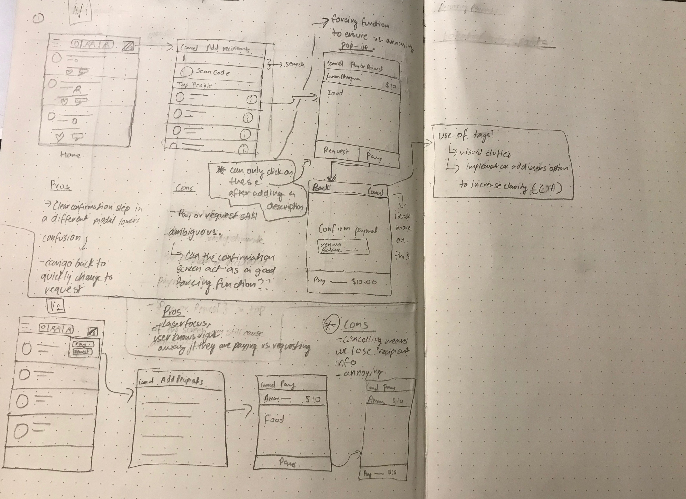My initial sketches diverged between two possible solutions.
The first one on the top, involves the same flow as that seen on the current user flow for requesting or paying. However, upon tapping on pay or request, a confirmation modal is surfaced, with the user getting an intermittent reminder that they are indeed paying or requesting a certain amount.
However, does this foster focus in our user flow?
In another exploration, I explore using a drop-down after tapping the transaction call to action, with the user instantly being able to make a decision between pay or request, before going through the familiar transaction flow, with a single call to action (pay in the above example) instead that aims to minimize ambiguity and provide the user with laser focus on what they are doing. In comparison to the original flow, where a user might have to go back, or, accidentally pay vs. request, they now have a clear idea of what kind of transaction they are in.
Whilst it seems counterintuitive to add another step to get to the transaction page, the design intent was that it'd nudge the user to think about what kind of transaction they are making before going through the rest of the flow.
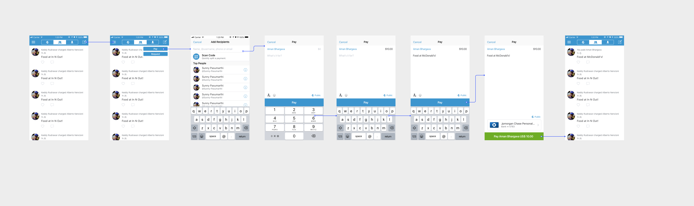Exploring this in a higher fidelity, there are intermittent reminders throughout the flow, including the explicit header and the singular call to action that serve as context to the user in terms of what transaction they are in. The flow, however, is familiar to Venmo’s holistic user flow in terms of transactions.
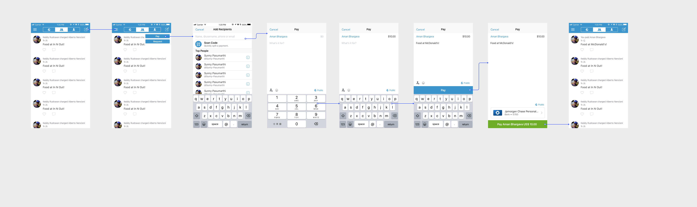However, one problem that I realized the interface had after informally testing this exploration and the app was that Venmo surfaced the call to action, even though a pop up appears if the user hasn’t written a description or the amount. To account for this, I created an iterated upon exploration that would hopefully act as a soft forcing function for the user to fill in all the necessary information before moving on.
In this final user flow for transactions, the call to action to pay or request is only surfaced after the user has input a description and amount, where the intent is to mitigate confusion over whether the user has to put in a description or not, and instead fostering laser focus throughout the transaction process.
Solving for the problem of recurring payments through Venmo
Feature Proposal
Recurring payments are a potential area of entry to differentiate Venmo, especially as products like Zelle and Cash App are eating into Venmo’s market share.
A clear problem exists, where the current workflow for recurring payments is one with potential points of friction, and Venmo’s product goal is to help make payments less awkward and more efficient.
However, such a feature should still be consistent from a systematic standpoint with the current Venmo flow. Venmo already has a familiar flow to most users, and any changes to it should be subtle, so that it doesn’t breed unfamiliarity and confusion in the interface, which can potentially lead to lack of trust.
While a lot of recurring payment infrastructures in other products have auto-pay enabled, a key aspect of Venmo’s success is that they give users total control in terms of paying, and from which method (bank, Venmo balance). Also, auto-pay would be unfeasible from a UX standpoint, for example not all users have their banks connected, in the case where their Venmo balance is too low. Therefore, a reminder serves as a way to notify the user at a recurring date, without the possibility of them losing control of their money.
Main Use Cases
Setting up a recurring request for rent or subscriptions
Leaving a recurring request (for example if an apartment mate has moved out), or editing transaction details.
Potential entry points
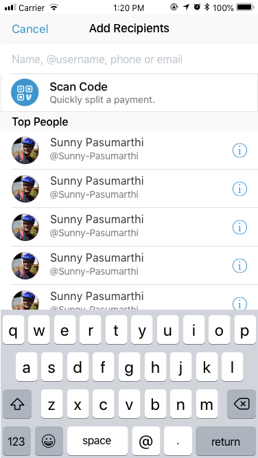Add recipients page
Add-recipients, while an interesting exploration, didn’t make sense as an explicit entry point. The scan code functionality is used for scanning someone’s venmo code and adding as a recipient, and having a call to action for setting up a recurring payment doesn’t match the users mental model for selecting the type of transaction before involving the responsible parties, and this solution would only serve to increase ambiguity.
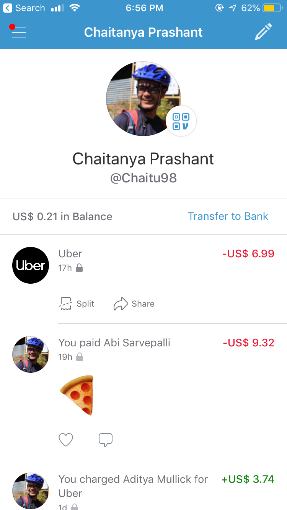Profile page
The profile page, while not a viable point of entry for starting the payment, seemed like an appropriate place for editing and accessing a recurring request, with a familiar design pattern already in place (ability to split Uber purchases); However, I would have loved to test this out with users and collect real time usage data.
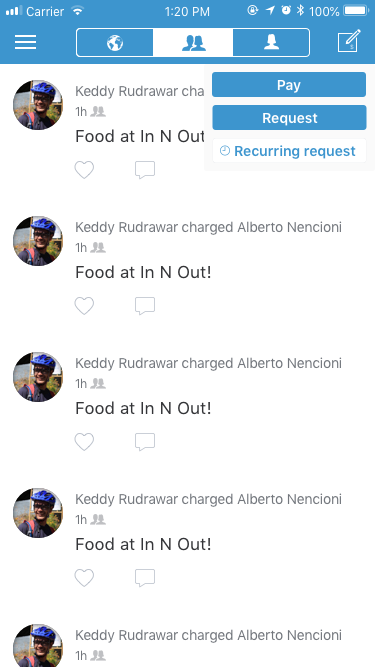Redesigned action dropdown
While exploring potential points of entry, one that stood out to me was the dropdown that I had implemented for the earlier payments flow. During interviews, Venmo users were pretty enthusiastic about the feature, with one saying
“I’d probably use this feature less than normal requests, but still need a way to quickly ask for my friend’s part of the subscription without having to make a mental note every time”
With this in mind, I decided that the best entry point would be housed inside the redesigned payments flow, on the top right of the screen above. While being easily accessible, it isn’t as common a use case as pay or request, which is why I changed the button color to deemphasize it on the users hierarchy, while using iconography to signify the functionality.
Explorations for setting up a recurring request
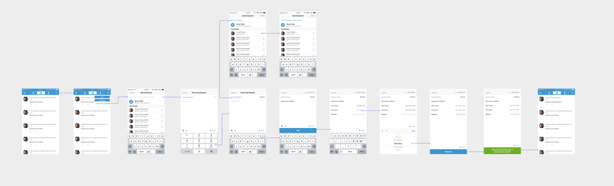The first solution presents the dropdown first, where the user is able to select the recurring request option and is taken to the add recipients page, familiar to Venmo’s existing user flow, alongside the redesigned forcing function I implemented (only surfacing a call to action after transaction details have been filled out). After the user adds a recipient, amount and description however, I add another call to action that then allows them to edit the various parameters involved in recurring transactions, which are
- Start date
- End date
- Frequency of recurring requests
I made sure to conform to existing iOS patterns here, so that the interaction is familiar, and one that fosters trust in the product. Once a user has entered their transaction details, they are able to tap on a single call to action (request), and confirm the recurring request, with the intention being that there is no ambiguity in the flow.
In terms of copy for the confirmation message, I decided to add the frequency of recurring requests to subtly remind the user again, the type of transaction that they are making, aiming to minimize any ambiguity that might take place.
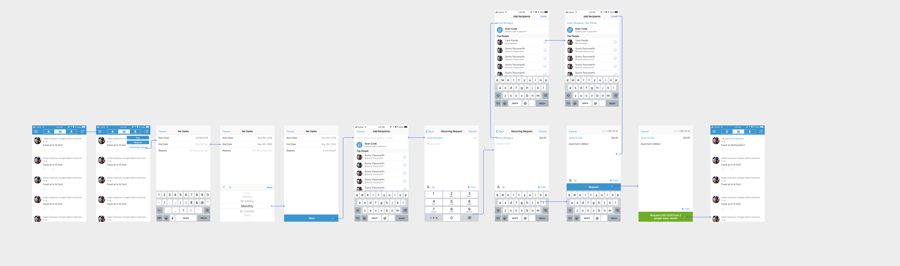In the second solution, I explored a different flow, where the user after tapping on recurring requests, first selects the date based parameters before going on to add recipients and the remaining transaction details (amount, description). However, recurring transaction information is not provided in context during confirmation, which can increase cognitive load for the user (in terms of remembering dates and frequency of recurring requests without having a look at the information during confirmation.
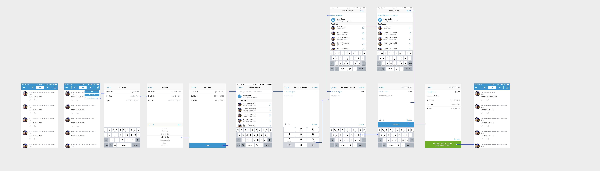Therefore, I added the recurring transaction information during the confirmation stage of the flow. The intention being that it would lessen the cognitive load faced by the user when making the transaction and providing them control and context in terms of being able to change the recurring transaction details before confirmation.
While these were two interesting divergent solution sets in terms of setting up recurring payments, I realized through research and Venmo’s own transaction flow compared to the traditional transaction flow that humans carry out (diagram above), it is awkward for them to decide transaction details before jumping to who the recipient is and the transaction amount.
Therefore Solutions 2 and 3 actually mismatch to users’ mental models in terms of how transactions are carried out, and thus I concluded that Solution 1 would prove a stronger one in terms of matching a users’ mental model, since it goes through the traditional transactional flow, with simply a step added in the description of a transaction. To give an example, if Joy is sharing a Netflix subscription with her friends, her first priority is to find the people she’s sharing the account with, before then looking at the amount and transaction details.
Accessing and editing a recurring payment
For being able to access and edit a recurring payment, I aimed to make this step incredibly simple for the user. They are able to access the payment from either within their feed or the profile, where they can edit the payment. This works similarly to the split call to action when users pay by Venmo card or in this example, Uber’s Venmo integration.
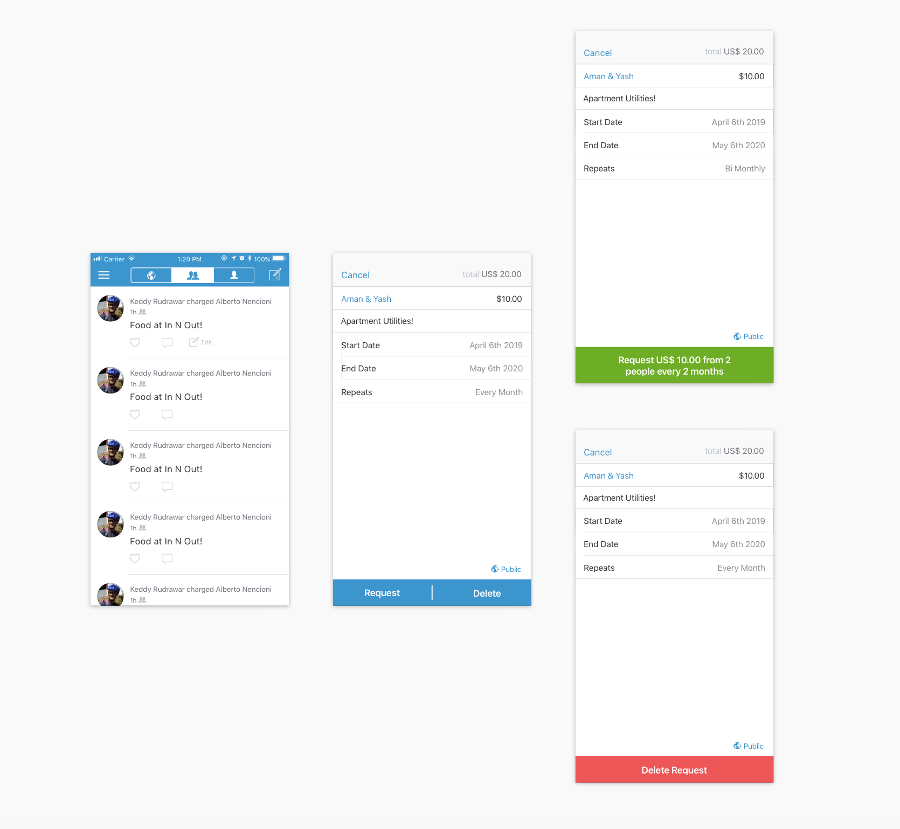Screens for editing a recurring request
Using this common design pattern, I used a feed cell as the entry point, with the user being able to “edit” a payment if it was one of a recurring nature.
From the side of a user who created the recurring request, the user can go into edit, which surfaces the transaction information.
The user can edit the information and make an updated request, or delete the request altogether, with a confirmation serving as an intentional forcing function here, and making the process of editing a recurring payment familiar to the user flow already present in Venmo, leading to a more seamless interaction.
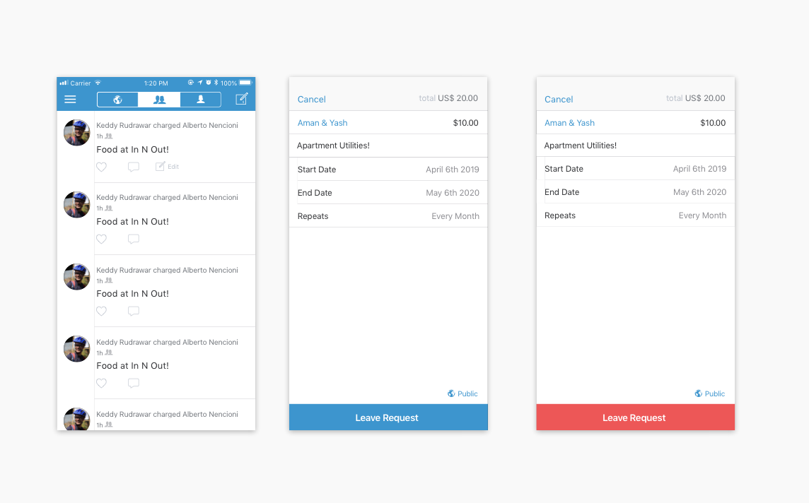Screens for leaving a recurring request
However, from the side of a user who didn’t set up the request, but still wishes to access it, they only have the option to leave, and not to edit any of the original transaction details. The rationale for this is to provide control to the original requester (since they are the party that initiated the transaction), while minimizing confusion in the case where a recipient could potentially change the parameters by mistake.
The change of the call to action from the primary blue to red aims to signify to the user that they are indeed leaving the transaction, and serves as a forcing function to consider their decision.
Lessons and next steps
- Constraints matter:For my redesign, I wanted to stay true to the Venmo brand, and make sure to not introduce any new features or visual patterns that would be blue sky solutions to user problems and unfeasible. Instead, by focusing on interaction and product design, I was able to scope the problem space much better, which allowed me to come up with a stronger design solution.
- Listen to your users:While designing, it is often easy for us to design in a silo, which is why it is critical to get out of your own bubble and consider users’ needs and pain points before redesigning an existing product or proposing a new feature.
- Product design is never an individual endeavor:I would have loved to collaborate with Venmo designers, engineers and users to deeply understand the potential tradeoffs involved. A lot of my designs were based on cursory research and designer assumption, rather than solid data, which would have been fantastic to leverage for this exercise, and would have surely lead to a stronger solution.
- User testing and motion design:Given more time, I would definitely have liked to create testable prototypes in Framer or Origami, that I could informally test with users to iterate even quicker. Another aspect I would have loved to worked on would be to incorporate motion design and micro-interactions that would convey the flow and reinforce subtle feedback for the user, which I will be working on soon!
Thank you for reading through all of that! If you have any feedback, don't hesitate to hit me up on chaitanyaprashant@gmail.com